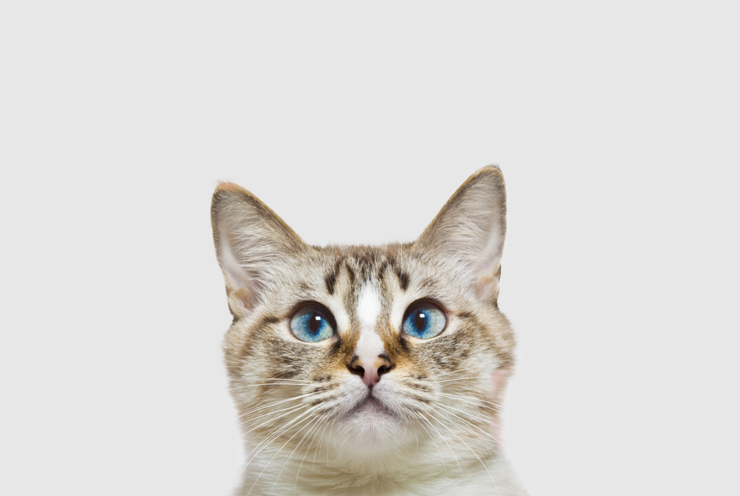
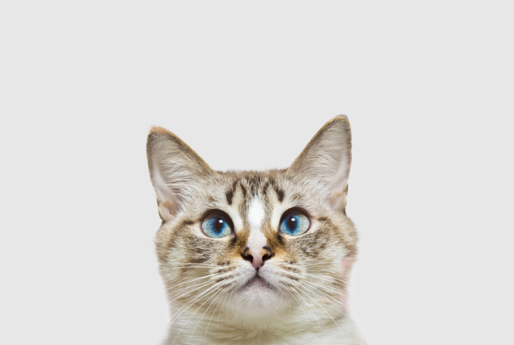

|  |
♡"고양이를 사랑하는 모임"♡ |
|  |
♡"고양이를 사랑하는 모임"♡ |
고양이들은 강아지와는 달리 외부활동을 많이 하지 않는 동물이기 때문에
예방이 크게 필요하지 않을 거라는 생각을 갖고 있는 분들도 많다 냥!
하지만 , 여름이 되면 여름의 불청객 모기들이 어김 없이 찾아오고,
모기로 인해 심장사상충의 감염 위험이 있다 냥..
심장사상충은 강아지에게만 국한 되는 것은 아니다 냥!
그렇기 때문에 고양이도 심장사상충 예방이 필요하다 냥
고양이들의 전면특허 그루밍 그루밍은 이물질을 제거하기 위해 혀에 침을 묻혀 온몸을 핥거나 이빨, 발톱으로 털을 다듬는 행동을 하는데 이것은 정서적 안정을 찾거나 자신의 흔적을 없애기 위해서라고 한다 냥! 그런데 이과정에서 죽은 털들을 괴장히 많이 삼킬수 있다 냥 보통 헤어볼이라는 것으로 몸에서 배출이 되게 되는데 , 그냥 그대로 두면 위장장애를 초래할 수 있다 냥! 이를 예방하기 위해서는 매일매일 빗질을 해주시면 도움이 될것 같다 냥
고양이 키울 때 주의사항으로 꼭 말씀 드리고 싶은 부분이다 냥 고양이들의 착지능력은 아주 우수하다 냥 하지만 언제 어디서든 어떻게 떨어져도 안전하다는 소리는 절대 아니다 냥 뇌진탕이나. 장애물에 의해 상처가 날 수 있다 냥 주변의 위험한 물건들은 잘 정리해주라 냥
사료
간식
식기 최소 2개(식수1,사료1)
화장실(1묘=1개)
화장실 모래
이동장
침대(쉬는공간)
담요
장난감
스크래쳐
캣타워
치약/칫솔